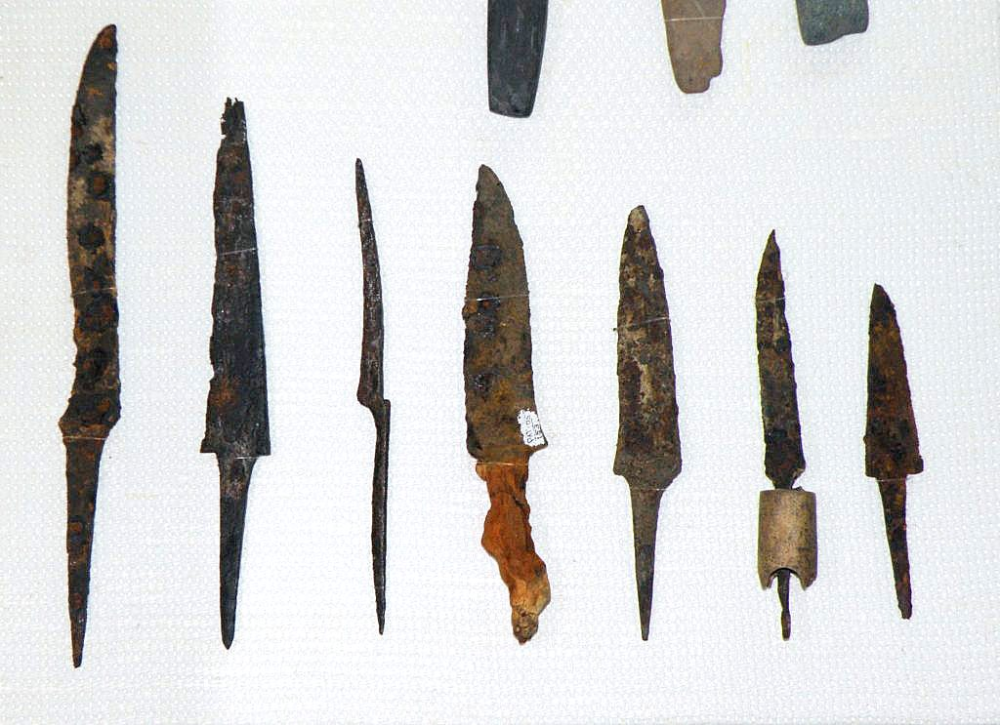
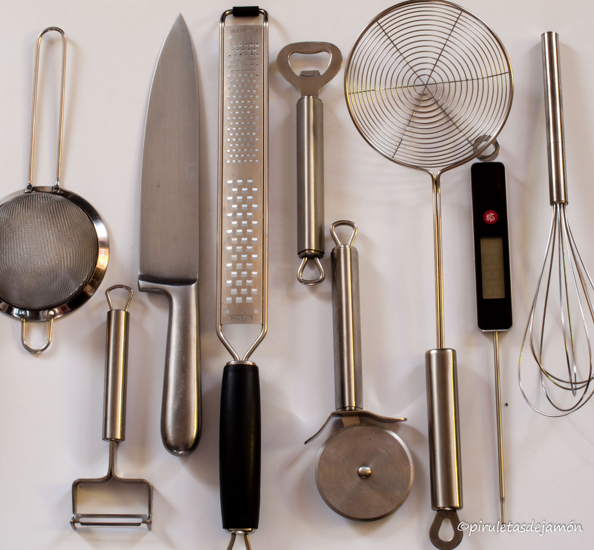
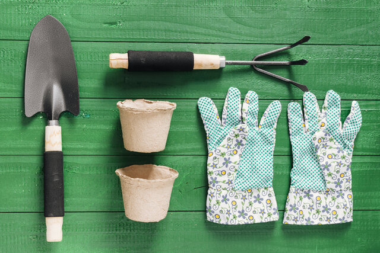
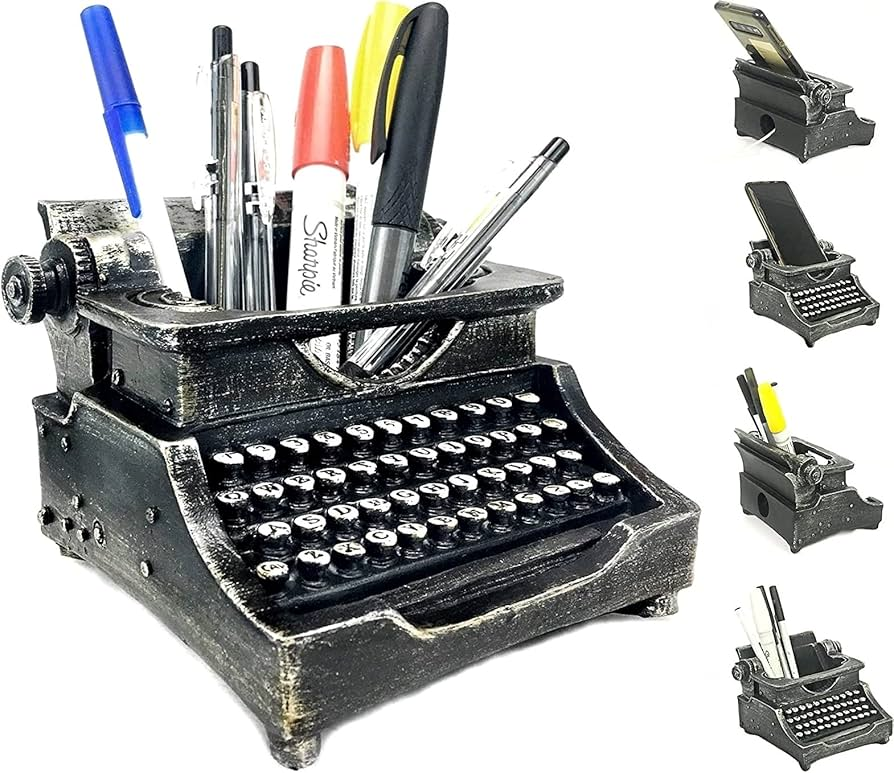
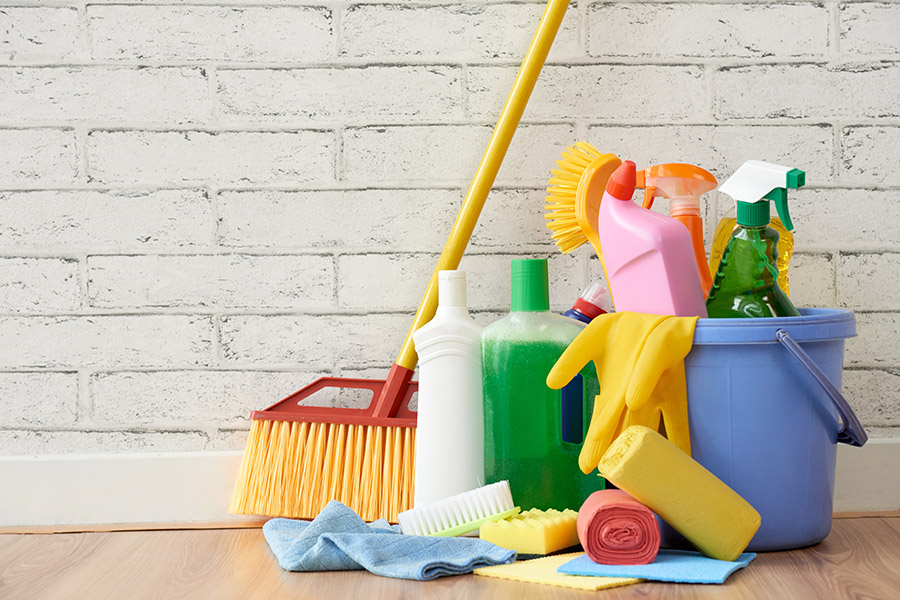
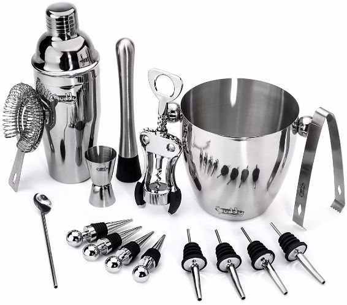

Los Utensilios: Origen y Evolución
Explora el fascinante mundo de los utensilios, desde sus orígenes hasta su evolución moderna. Descubre cómo estos objetos cotidianos han cambiado a lo largo del tiempo y cómo continúan facilitándonos la vida.
Origen de los Utensilios
Los primeros utensilios fueron creados por seres humanos primitivos que utilizaban pi edras, huesos y otros materiales naturales para fabricar herramientas simples. Estos uten silios permitían realizar tareas esenciales como cortar, cazar y cocinar.

Evolución de los Utensilios
A medida que avanzó la tecnología, los utensilios evolucionaron desde herramientas de piedra hasta utensilios de metal y plástico. Este cambio ha facilitado la preparación de alimentos, el trabajo en el jardín y la escritura, entre muchas otras actividades.
Variedades de Utensilios
Utensilios de Cocina
Los utensilios de cocina, como cuchillos, cucharas y sartenes, son esenciales para la preparación de alimentos y se han mejorado para ser más seguros y duraderos. Más sobre utensilios de cocina.
Utensilios de Jardinería
Las herramientas de jardinería incluyen palas, tijeras y rastrillos. Estas herramientas han facilitado la siembra y el mantenimiento de plantas en jardines y parques. Más sobre utensilios de jardinería.
Utensilios de Escritura
Desde plumas de tinta hasta bolígrafos y lápices modernos, los utensilios de escritura han permitido registrar ideas y conocimiento a lo largo de los siglos. Más sobre utensilios de escritura.
Utensilios de Escritura
Esponjas y paños. Existen una gran variedad de paños y esponjas que debemos tener en nuestro hogar. ... Detergente y lavavajillas. ... Lejía. ... Limpiador multiusos desinfectante. ... Trapeador o mopa. ... Escoba y recogedor. ... Cepillo para baño. ... Guantes y baldes..
Utensilios de cocteleria
Si bien es cierto que son muchas las herramientas de trabajo que todo buen «coctelero, bartender o barman» debería conocer, no es menos verdad que no todas ellas son imprescindibles y que la selección de aquellas más importantes puede darte, per se, un abanico de posibilidades bastante interesante tanto para profesionales como para personas que están iniciándose en tan bella disciplina, es por ello, que lejos de tener que hacer una compra desorbitada de material hemos querido ofrecerte una guía express que mantiene el equibilibrio perfecto entre cantidad de objetos y posibilidades que ofrece, es por ello que esperamos que disfrutes de nuestra guía de utensilios de coctelería..
